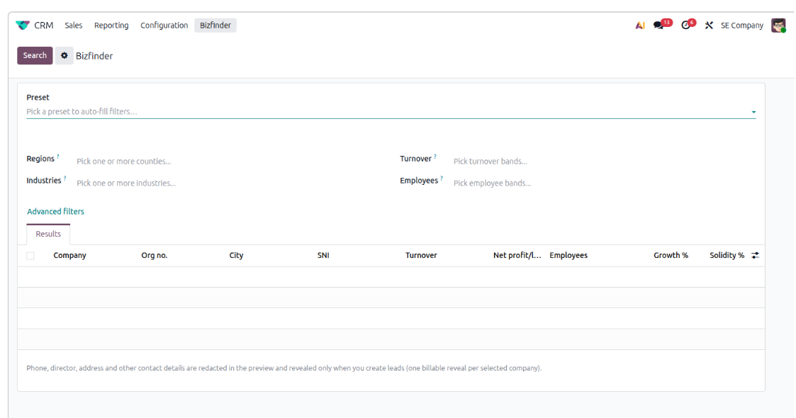
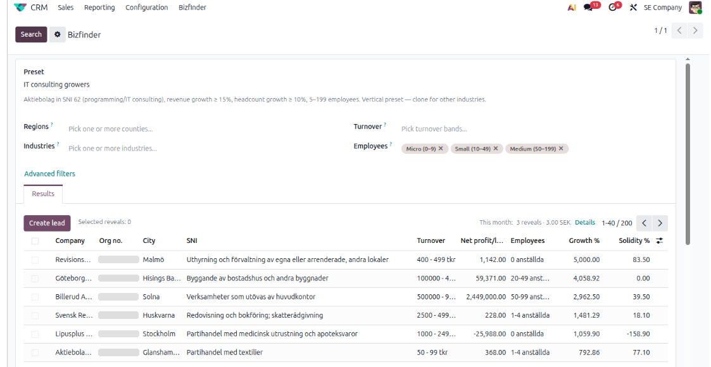
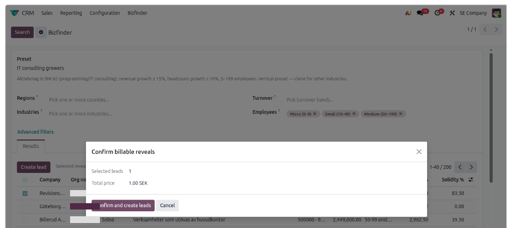
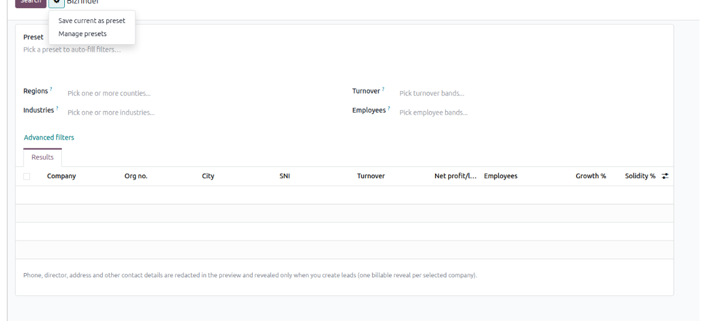

The Bizfinder module is free. The Swedish company data it displays comes from a separate, subscription-based Bizfinder service operated by UCS OneDo AB. Without an access token issued to your company, the module installs and its screens open, but no company data can be retrieved and no leads can be created. Contact UCS OneDo to set up the integration.
Bizfinder helps sales teams find Swedish prospects from a Creditsafe-backed data service directly inside Odoo CRM. Preview matching companies without exposing billable contact details, refine your search with company and financial filters, reuse searches as presets, and turn selected companies into CRM leads — after you have confirmed the price.
Built-in duplicate protection keeps your CRM clean, and users with Sales Manager rights can follow the month's usage and cost. You pay only for the companies you actually turn into leads.
Filter Swedish companies by region, industry, turnover and employee band, then open the advanced filters for legal form, SNI code, F-tax, VAT, municipality, postal codes, registration dates, net profit/loss, exact employee count, growth % and solidity %. Bizfinder shows up to 200 matching companies in a redacted preview — phone number, signatory, address and other billable contact details stay hidden until you create leads.

Filter Swedish companies and preview matches. Billable contact details stay redacted in the preview.
Tick the companies you want. Bizfinder automatically compares each company's exact organisation number against your existing CRM leads and removes duplicates from the results, so you never pay twice for a company you already have.

A clean results list — up to 200 companies, with duplicates already filtered out.
When you create leads, Bizfinder shows a confirmation dialog with the number of selected companies and the total price before anything is charged. Duplicates are excluded from both the count and the price, so there are no surprises.

See exactly how many companies — and what it costs — before anything is billed.
On confirmation, Bizfinder reveals one company per selection and creates matching CRM leads. Each lead carries structured company information imported from Creditsafe via Bizfinder — organisation number, VAT number, legal form, signatory, addresses, turnover, profitability and key financial figures — ready for your sales team to act on.
Save any filter combination as a reusable preset, update it as your ideal customer profile shifts, and manage the full list from one place.

Save the current filters as a preset, or manage your saved search profiles.
This Odoo module is free. The Bizfinder data service is billed separately at 1 SEK or €0.10 (10 euro cents) per generated company (lead).
You are billed only when you confirm lead creation. Previews, searches and companies removed as duplicates are always free, and exactly one billable reveal is charged per company.
Bizfinder retrieves Swedish company register and credit information from Creditsafe through the Bizfinder service. When you create leads, that data is stored in your own Odoo database and you remain the data controller for it. Creditsafe credentials are held server-side by the service and are never stored in your Odoo database — the module only holds the revocable access token issued to your company.
Creditsafe is a trademark of its respective owner and is referenced here only to describe the origin of the data. UCS OneDo AB is not affiliated with or endorsed by Creditsafe.
Bizfinder is activated with a usage key (access token) issued to your company. Contact UCS OneDo to receive your key and start generating Swedish leads inside Odoo.
Email: info@ucsonedo.se · Phone: 070-739 65 94 · Web: www.ucsonedo.se